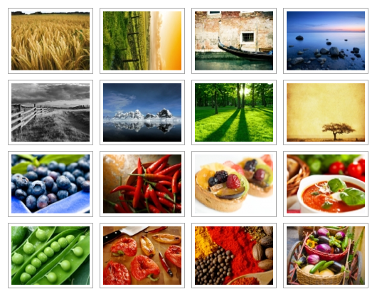

HOŞ GELDİNİZ
WORDPRESS'DE SEO
Tarık ÇAYIR (Momoth)
WordPress Türkiye
Kimim ben?
Kurucu / WordPress Geliştirici - Momoth
Yazar - WPNotları
Sosyal Medya ve Organizasyon Sorumlusu - WP Türkiye
Momoth'da neler yapıyoruz?
WordPress Çözümleri
- WP Eklenti Yazıyoruz
- WP Tema Yapıyoruz
- WP Ölçeklenebilirlik
- WP Danışmanlığı
- WP Eğitimleri
- WP Rehberi (E-Kitap)
Kesinlikle SEO konusunda uzman değilim!
Burada bulunmamın temel amacı WP ile yakından ilgilenmem ve WP Türkiye'yi temsil etmemdir.
*İlgili arkadaşlara duyrulur :)
WordPress'in Dünya da Kullanımı
Dünya çapında 60+ Milyondan fazla web sitesi WP kullanıyor.
Sadece 3.9 versiyonu 20.000.000+'dan fazla indirildi.
4.0 versiyonu 12.500.000+ kez indirildi/güncellendi ve hâlâ devam ediyor.
WordPress'in Türkiye de Kullanımı
Sadece 3.9 versiyonu 900.000+'dan fazla indirildi.
4.0 "Türkçe" versiyonu 170.000+ kez indirildi/güncellendi ve hâlâ devam ediyor.
Türkiye'de 1.000.000'dan fazla aktif
WordPress kullanıcısının olduğunu
söyleyebiliriz*
Kaynak: tr.wordpress.org
Peki Biz WordPress Türkiye Olarak Ne Yapıyoruz?

WP Günlerini İstanbul haricinde bir başka şehirde de yapmak istiyoruz!
İzmirdeki ilgili arkadaşlara duyrulur ;)
WordPress'de SEO
Tema
Kullanılacak Temanın SEO Uyumluluğu
- Doğru kodlanması*
- <title> ve <hx> doğru kullanımı
- Görsellerin alt,title ve image caption değerlerine dikkat edilmesi
- Linklerin title değerlerine dikkat edilmesi
- Çoklu dillerde linklerde hrflang kullanımı
Yedekleme
Bırakın yedeklemeyi eklentiler, otomatik olarak sizin için yapsın
Profesyonel çözüm için ManageWP *Ücretli
Kalıcı Bağlantılar
SEO Eklentisi
Site Haritası
Görseller
Attachment Sayfaları
SEO Dostu Görseller
SEO Dostu Görseller 2
Easy Upload Renamer for WordPress *Ücretli
Görselleriniz İstediğiniz Gibi Görünsün
Optimizasyon
CDN & Cache Eklentisi
Görsellerinizi Sıkıştırın
Ayağınıza Takılan Eklentileri Bulun
+Bonus
Başlıklarınız da A/B Testi Yapın